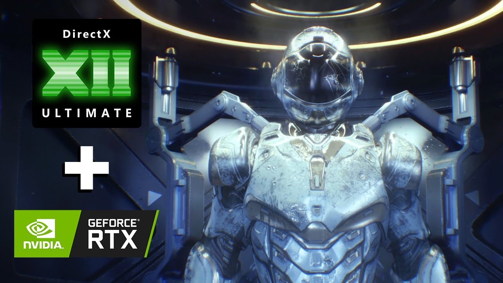

DirectX 12 第一篇
DirectX 12 初始化
在我的前言中我就分享了我为什么开始写博客 点击这个网址，anyway 回归正题
Directx 引言
Directx 12 是 Directx 11的后续产品， 代表了Direct诞生以来最大的一次结构更新和更改。 发生着变化的主要原因是对应游戏行业的要求提供的一种渲染SDK，以便为图形提供跟多的功能和控制。 早期版本的DirectX SDK中存在的驱动程序开销的一个实例是资源管理。驱动程序(Driver)需要管理每一个渲染管线的生命周期。如果可以假设应用程序程序员可以用更少的开销执行此任务，则通常不需要驱动程序跟踪资源。为开发人员提供工具以实现其自己的资源管理，使该责任从驱动程序的实现中解放了出来，并且如果正确完成，通常还可以提高性能。
DirectX API
DirectX是Microsoft开发的应用程序编程接口（API）的集合。 DirectX API的各种组件可提供对基于Windows的操作系统上运行的硬件的低级访问
DirectX 12 Components
DirectX SDK 实际上上应用程序编程的接口(API)的集合，与硬件加速3D图形渲染有关的API称为 DirectX3D。
DIRECT2D
DIRECT2D是一种硬件加速的即时模式2D图形API,提供高质量的渲染。Direct2D API旨在与Direct3D互操作。
DIRECT3D
Direct3D是3D图形API，可让您为3D几何图形创建高性能渲染。 Direct3D API还允许创建可以利用GPU并行性的高性能通用应用程序。 使用DirectX 12时，通常是指Direct3D 12图形API。
DirectX 12 图形管道
DirectX 12图形管道包包括几个阶段。渲染管线的某几个阶段是固定的，这意味着该阶段只能通过DirectX12 API 的功能来进行配置。
其他阶段是可编程的，可以使用 "shader program" 来进行控制，他是按照High Level Shading Language (HLSL)。
 该图片说明了DirextX 12 渲染管道的各个阶段，蓝色的矩形块代表固定功能阶段，不能通过创新修改，绿色的代表图形管线的可编程阶段。
该图片说明了DirextX 12 渲染管道的各个阶段，蓝色的矩形块代表固定功能阶段，不能通过创新修改，绿色的代表图形管线的可编程阶段。
计算着色器
计算着色器色通过使用GPU作为一种并行处理器来扩展CPU的处理能力，他适用于紧急快的计算。像其他可编程着色器一样，计算着色器色使用HLSL设计和实现的。
Input-Assembler Stage
图形管道第一阶段称为输入组装阶段(Input-Assembler Stage)。输入汇编程序阶段(input assembler)的目的是从用户的定义的顶点(vertex buffer)和索引缓冲区(index buffer)中读取基本数据,比将该数据祝贺为几何数据(线列表，三角形带或具有邻接数据的基本数据）。
下面我们可很清楚的看到一个立方体的定点数据，使用了索引缓冲区(Index Buffer)可以进行代替指定绘制，有效的减少了顶点缓冲区的占用空间，避免大量的重复的顶点。我们可以看到正面顶点 = (// 正面0, 1, 2, 2, 3, 0,) 和左面// 左面4, 5, 1, 1, 0, 4,)

Vertex Shader Stage
顶点着色器(Vertex Shader)阶段负责将顶点数据冲对象空间转换剪辑空间。顶点着色器也可以用于执行（骨骼）动画或计算每个顶点的光照。 顶点着色器将单个顶点作为输入，并输出该顶点的裁剪空间位置。 顶点着色器是定义有效管道状态对象绝对需要的唯一着色器阶段
Hull Shader Stage
HS阶段是称为Tessellation阶段的三个可选阶段中的第一个。 镶嵌阶段包括HS着色器，细分(Tessellator)和阶段着色器阶段(the Domain Shader stages)。 他们共同努力实现称为Tesselation。 tesselation作用是将一个原始对象（例如三角形或直线）分割成许多较小的部分，从而以极快的速度增加模型的细节。 它会在将所有这些新原语放入屏幕之前在GPU上创建它们，并且不会将它们保存到内存中。
Tessellator Stage
Tessellator阶段是固定功能阶段，根据外壳着色器阶段指定的细分因子，将贴图基元细分为更小的基元。
Domain Shader Stage
域着色器（DS）阶段是可选的着色器阶段，它基于来自Hull Shader着色器的输出控制点和来自Tessellator细分器阶段的插值坐标来计算最终顶点属性。 域着色器的输入是来自Tessellator细分阶段的单个输出点，并且输出是Tessellator细分图元的计算属性。
Geometry Shader Stage
几何着色器（GS）阶段是一个可选的着色器阶段，它以单个几何图元作为输入，将图元转换为另一种图元类型（例如，指向四边形的点）或生成其他图元。
光栅化阶段
Rasterizer阶段（RS）阶段是固定功能阶段，如果启用了正面或背面剔除，它将把图元裁剪到视锥中，并执行图元剔除。 光栅化程序阶段还将在每个图元的面上插值每个顶点的属性，并将插值传递给像素着色器。
像素着色器阶段
像素着色器（PS）阶段从光栅化器阶段获取插值的每个顶点值，并生成一个（或多个）每个像素颜色值。 像素着色器还可以通过将单个组件的32位浮点值映射到SV_Depth语义来可选地输出当前像素的深度值，但这不是像素着色器程序的要求。 像素着色器为基元覆盖的每个像素调用一次。
输出合并阶段
Output-Merger（OM）阶段将各种类型的输出数据（像素着色器输出值，深度值和模板信息）与当前绑定的渲染目标的内容结合在一起，以产生最终的流水线结果。
前言
在下面的部分，我们将研究基本的D概念和使用到的技术。
Initialization
Direct3D的初始化过程要求我们熟悉一些基本知识Direct3D类型和基本图形概念
COM
Component Object Model (COM) 是允许DirectX成为编程语言独立并且具有向后兼容性，我们通常指 以COM对象作为接口，出于我们的目的，可以考虑并用作COM对象C ++类。 为了帮助管理COM对象的生命周期，Windows行时库（WRL）提供Microsoft :: WRL :: ComPtr类（#include <wrl.h>），该类可以被认为是COM对象的智能指针。
纹理格式
2D纹理是数据元素的矩阵。 2D纹理的一种用途是存储2D图像 数据，纹理中的每个元素都存储像素的颜色。 但是，这不是仅用法,例如，在一种称为法线贴图的高级技术中，每个元素在纹理中存储3D向量而不是颜色 纹理不能存储任意种类的数据元素,它只能存储某些类型的数据元素格式，这些格式由 DXGI_FORMAT枚举类型。 一些示例格式为：
- DXGIFORMATR32G32B32_FLOAT：每个元素具有三个32位浮点 组件。
- DXGIFORMATR16G16B16A16_UNORM：每个元素都有四个16位 组件映射到[0，1]范围。
- DXGIFORMATR32G32_UINT：每个元素都有两个32位无符号整数 组件。
- DXGIFORMATR8G8B8A8_UNORM：每个元素具有四个8位无符号 组件映射到[0，1]范围。
- DXGIFORMATR8G8B8A8_SNORM：每个元素都有四个8位带符号 分量映射到[-1，1]范围。
- DXGIFORMATR8G8B8A8_SINT：每个元素都有四个8位带符号整数 组件映射到[-128，127]范围。
- DXGIFORMATR8G8B8A8_UINT：每个元素都有四个8位无符号整数 组件映射到[0，255]范围。
交换链和页面翻转
为避免动画闪烁，最好将整个动画帧绘制到屏幕外纹理称为后缓冲区。一旦将整个场景拖到后面
给定动画帧的缓冲区，它作为一个完整的帧显示在屏幕上
帧。这样，观看者不会在绘制框架时观看，而只是观看者
看到完整的帧。为了实现这一点，两个纹理缓冲区由
硬件，一个称为前缓冲区，第二个称为后缓冲区。前缓冲区
存储当前在监视器上显示的图像数据，而下一帧
动画被绘制到后台缓冲区。将框架向后拉后
缓冲区，后缓冲区和前缓冲区的作用相反：后缓冲区变为
前缓冲区和前缓冲区成为下一帧的后缓冲区
动画。交换后缓冲区和前缓冲区的角色称为呈现。
 前后缓冲区形成交换链（swap chain）。 在Direct3D中，交换链是
由IDXGISwapChain接口表示。 该界面存储正面和背面
缓冲区纹理，并提供用于调整缓冲区大小的方法
（IDXGISwapChain :: ResizeBuffers）和演示
（IDXGISwapChain :: Present）。
前后缓冲区形成交换链（swap chain）。 在Direct3D中，交换链是
由IDXGISwapChain接口表示。 该界面存储正面和背面
缓冲区纹理，并提供用于调整缓冲区大小的方法
（IDXGISwapChain :: ResizeBuffers）和演示
（IDXGISwapChain :: Present）。
深度缓冲
深度缓冲区是不包含图像数据而是包含图像的纹理的示例
有关特定像素的深度信息。 可能的深度值范围从0.0到
1.0，其中0.0表示视锥中的对象最接近观察者，并且1.0表示视锥体中的对象离查看器可能最远。
 视图窗口对应于我们的2D图像（后缓冲区）生成3D场景。 我们看到可以将三个不同的像素投影到
像素P。直觉告诉我们应该将P1写入P，因为它离观看者更近
并阻挡其他两个像素。 深度缓冲算法提供了一种机械
在计算机上确定此步骤。 请注意，我们显示了深度值
相对于正在查看的3D场景，但实际上已将其标准化为范围
[0.0，1.0]存储在深度缓冲区中时。
总而言之，深度冲缓通过计算每个像素的深度值和执行深度测试。具有深度值的像素最渐进观看者的位子，这就被写入后备缓存区的像素。
视图窗口对应于我们的2D图像（后缓冲区）生成3D场景。 我们看到可以将三个不同的像素投影到
像素P。直觉告诉我们应该将P1写入P，因为它离观看者更近
并阻挡其他两个像素。 深度缓冲算法提供了一种机械
在计算机上确定此步骤。 请注意，我们显示了深度值
相对于正在查看的3D场景，但实际上已将其标准化为范围
[0.0，1.0]存储在深度缓冲区中时。
总而言之，深度冲缓通过计算每个像素的深度值和执行深度测试。具有深度值的像素最渐进观看者的位子，这就被写入后备缓存区的像素。
DirectX Graphics Infrastructure
DirectX图形基础架构(DXGI) 是与Direct3D一起使用的API。DXGI的基本思想是与图形相关的任务共有一样的API。 例如，一个2D渲染API需要交换链和页面翻转 流畅的动画效果与3D渲染API一样，因此因此交换链接口 IDXGISwapChain 实际上是DXGI API的一部分。DXGI处理其他 常见的图形功能，例如全屏模式转换，枚举图形系统信息，例如显示适配器，监视器和支持的显示模式（分辨率，刷新率等）
我简要描述一些关于DXGI概念和接口，这些概念和接口一般在Direc3D初始化使用。DXGI的关键接口之一是DXIGFactory接口，他主要用于创建IDXGISwapChain接口并枚举显示 适配器。 但是，系统也可以具有模拟硬件图形功能的软件显示适配器。一个系统可以有 多个适配器（例如，如果它具有多个图形卡。适配器由IDXGIAdapter接口。我们可以使用以下命令枚举系统上的所有适配器 以下代码： void D3DApp::LogAdapters() { UINT i = 0; IDXGIAdapter adpter = nullptr // null 指针 std::vector<IDXGIAdapter> adpterList; while(xxxx) { DXGIADAPTERDESC desc; //adapter 说明 adapter->GetDesc(&desc); ..... } } 一个系统可以有多个监视器。 监视器是显示输出的示例。 一个 输出由IDXGIOutput接口表示。 每个适配器都与一个 输出列表。 例如，考虑一个具有两个图形卡和三个监视器的系统， 其中两个监视器连接到一个图形卡，而第三个监视器则连接 直到另一张显卡。 void D3DApp::LogAdapterOutputs(IDXGIAdapter adapter) { UINT i = 0; IDXGIOutput *output = nullptr // null 指针 while(xxxx) { DXGIOUTPUTDESC desc; //adapter 说明 output->GetDesc(&desc); ..... LogOutputDisplayModes(output,DXGIFORMATB8G8R8A8_UNORM); ... } }
Check Feature Support
我们可以使用此功能进行检查。 该方法的原型如下如下：
void D3DApp::LogAdapterOutputs(IDXGIAdapter* adapter)
{
HRESULT ID3D12Device::CheckFeatureSupport(
D3D12_FEATURE Feature,
void *pFeatureSupportData,
UINT FeatureSupportDataSize);
}ID3D12Device :: CheckFeatureSupport函数检查支持很多 的功能, SDK文档中有关每个功能结构的数据成员的详细信息。
Residency
复杂的游戏会使用很多资源，例如纹理和3D网格，但是很多GPU不会一直需要这些资源。 在Direct3D 12中，应用程序管理资源的驻留时间，方法是从GPU内存中逐出资源，然后执行 根据需要将它们再次驻留在GPU上。 基本思想是最小化多少GPU应用程序正在使用的内存。
在默认的情况下，创建资源是将其设置常驻状态，将资源移出时将其逐出毁了。但是，应用程序可以通过以下的方式手动控制驻留时间方法:
HRESULT ID3D12Device::MakeResident(
UINT NumObject;
ID3D12Pageable *const *ppObjects);
HRESULT ID3D12Device::MakeResident(
UINT NumObject;
ID3D12Pageable *const *ppObjects); 对于这两种方法，第二个参数都是ID3D12Pageable资源的数组， 第一个参数是数组中的资源数量。
CPU/GPU INTERACTION
我们必须了解，通过图形编程，我们有两个处理器在工作：CPU和GPU。 它们并行工作，有时需要同步。 对于最佳性能， 目标是尽可能长时间保持忙碌并最小化同步。 同步是不希望的，因为它意味着一个处理单元在等待对方完成工作时处于空闲状态.
GPU具有命令队列。 CPU通过以下方式将命令提交到队列使用命令列表的Direct3D API。 重要的是要了解 一旦将一组命令提交到命令队列，它们就不会立即由GPU执行。 他们坐在队列中，直到GPU准备处理它们，因为GPU可能正在忙于处理先前插入的命令。 在DIRECT3D 12中，命令队列由ID3D12CommandQueue表示接口。它是通过填写D3D12COMMANDQUEUE_DESC结构创建的 描述队列，然后调用ID3D12Device::CreateCommandQueue。
Mfost::WRL::ComPtr<ID3D12CommandQueue> mCommandQueue;
D3D12_COMMAND_QUEUE_DESC = queueDesc = {};
queueDesc.Type = D3D12_COMMAND_LIST_TYPE_DIRECT;
queueDesc.Flags = D3D12_COMMAND_QUEUE_FLAG_NONE;
ThrowIfFailed(md3dDevice->CreateCommandQueue(&queueDesc, IID_PPV_ARGS(&mCommandQueue)));Macro 初始化:
define IID_PPV_ARGS(ppType) __uuidof(**ppType)), IID_PPV_ARGS_Helper(ppType)其中__uuidof（（ppType））计算为（的COM接口ID（ppType））在上面的代码中为ID3D12CommandQueue。IIDPPVARGS_Helper函数实际上将ppType强制转换为void 。 我们正在创建接口的COM ID， 并使用void 该接口的主要方法之一是ExecuteCommandLists将命令列表中的命令添加到队列的方法.
void ID3D12CommandQueue::ExcuteCommandLists(
//Number of command list in the array
UINT Count,ID3D12CommandList *const *ppCommandLists);
)从第一个数组元素开始按顺序执行命令列表。正如上述方法声明所的那样，表示了图形的命令列表由ID3D12GraphicsCommandList接口继承，该接口继承自ID3D12CommandList接口。 ... ... 与命令列表相关联的是称为的内存支持类ID3D12CommandAllocator.当命令被拒录到命令列表时，，它们 实际上将存储在关联的命令分配器中。 当命令列表是通过ID3D12CommandQueue :: ExecuteCommandLists执行命令 队列将引用分配器中的命令。
HRESULT ID3D12Device::CreateCommandAllocator(
D3D12_COMMAND_LIST_TYPE type,
REFIID riid,
void **ppCommandAllocator);
)... ...
由于有两个处理器并行运行，因此存在许多同步问题出现。 解决这种情况的一种方式是强制CPU等待到GOU完成任务。处理队列中的所有命令，直到指定的隔离点。我们称为刷新命令队列(flushing the command queue). 我们可以使用fence来做到这一点(ID3D12Fence接口同步GPU和CPU)。
HRESULT ID3D12Device::CreateFence(
UINT64 InitValue,
D3D12_FENCE_FLAGS Glag,
REFIID riid,
void **ppFence);
ThrowIfFailed(device->CreateFence(0,D3D12_FENCE_FLAG_NONE,,IID_PPV_ARGS(&MFence)));Fence对象维护一个UINT64值,该值只是用于标识fence的整数时间点。我们从零开始，每次需要标记一个新的fence点时，
只需增加整数

资源过渡
要实现常见的渲染效果，GPU通常会写入资源R一步执行，然后在随后的步骤中从资源R中读取。 如果GPU 未完成写入操作，从资源中读取资源将构成资源危害。为了解决此问题，Direct3D将状态(state)关联到 资源。资源在创建时处于默认状态，并且取决于告诉Direct3D任何状态转换的应用程序。 这使GPU可以执行任何工作需要做的过渡，并防止资源危害. 例如，如果我们写入资源（例如纹理），我们将纹理状态设置为渲染目标状态(texture state to a render target state), 当我们要读取纹理时，我们将其状态设置为着色器状态。 通过在通知Direct3D过渡时(transition)，GPU可以采取措施避免危险，列入通姑等待所有写入操作完成时在读取资源。 通过设置一系列转换资源壁垒(barriers)来指定资源转换在命令列表中。resource barrier由 D3D12RESOURCEBARRIER_DESC结构。
struct CD3DX12_RESOURCE_BARRIER : public D3D12_RESOURCE_BARRIER
{
... code
static inline CD3DX12_RESOURCE_BARREIR Transition(
_In_ ID3D12Resource* pResource,
D3D12_RESOURCE_STATES stateBefore,
D3D12_RESOURCE_STATES stateAfter,
UINT subresource = D3D12_RESOURCE_BARRIER_ALL_SUBRESOURCE,
D3D12_RESOURCE_BARRIER_FLAGS flags =
D3D12_RESOURCE_BARRIER_FLAG_NONE){... code}
)
}观察CD3DX12RESOURCEBARRIER的延伸D3D12RESOURCEBARRIER_DESC并添加了便捷方法。 大多数Direct3D 12个结构扩展了辅助程序变体。CD3DX12的变体都在d3dx12.h中定义, 该文件不属于 核心DirectX 12 SDK，但可以从Microsoft下载。
mCommandList->ResourceBarrier(1, &CD3DX12_RESOURCE_BARRIER::Transition(mDepthStencilBuffer.Get(),
D3D12_RESOURCE_STATE_COMMON, D3D12_RESOURCE_STATE_DEPTH_WRITE));这段代码转换了一个表示我们在屏幕上显示的图像的纹理从演示状态到渲染目标状态。 观察到资源barrier已添加
到命令列表(command list)。 您可以将资源壁垒转换视为命令本身指示GPU资源状态正在转换，以便它可以执行后续命令时必须采取的必要步骤，以防止资源危险。
Direct3D 12设计用于高效的多线程。命令列表(command list)设计为Direct3D利用多线程的一种方法。
对于有很多物体的大型场景，构建命令列表以绘制整个场景可能会花费CPU时间。 所以这个想法是并行构建命令列表。
您可能会产生四个线程，每个线程负责构建一个命令列表以绘制25％的场景对象。
综上描述，首先将GPU命令(GOU command)记录到ID3D12GraphicsCommandList，通常，需要单个命令列表来使用单个线程记录GPU命令。
ID3D12CommandAllocator用作将GPU命令记录到命令列表的后备内存(backing memory)。与命令列表不同，Command allocator除非记录在命令分配器在的所有命令都已经在GPU上完成执行，
否则无法使用。使用渲染目标视图描述交换链接(swap chain)的后缓冲区纹理。渲染目标视(render target view)图描纹理资源在GPU内存中的位置。
这篇文章稍微了介绍了下Direct3D的一些主要原理，那么下片文章开始开始创建Direct3D的设备。
 自这几个月学习的时间有可能程序先比博客写完，毕竟太难写了。。。
自这几个月学习的时间有可能程序先比博客写完，毕竟太难写了。。。